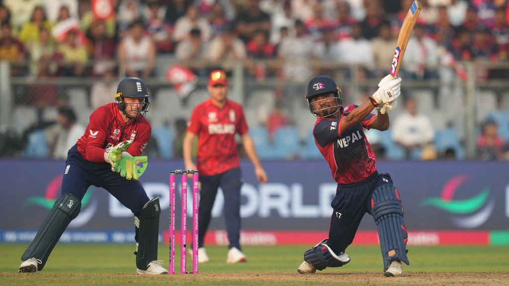

Nepal’s near-miss against England shows the gap is shrinking
Nepal didn’t beat England, but they exposed how fragile the traditional hierarchy has become.
Nepal have improved a lot in cricket and have are perhaps the second nation after Afghanistan to have followed a good blueprint for it. They played against bigger teams like West Indies. They also have started their own leagues with 4 overseas player per team which really helped them to get used to higher quality cricket. The Asia Cup as well as the Emerging Asia Cup plays a part in this because they get to play against the top teams and the second XI of the top teams, which are quite often better than them although I'm not sure if that is the case anymore because of the show they put up against England. They would've hardly faced anybody as wiley as Adil Rashid who can turn the ball sqaure and is a really experienced bowler as well as faced someone as lethal as Jofra Archer who at his best is one of the scariest bowlers to face in the cricketing world at the moment. Yet they were able to do well against both of them. This provides a good pathway to a lot of other asian teams like UAE, Oman, etc. also with the an european league backed by Netherlands, Scotland and Ireland popping up and I'm pretty sure that Zimbabwe and Namibia might have a few teams in the SA20 in the nearby future forming an African league which allows them to play higher quality cricket and as T10 becomes less abt fixing as more and more players are being exposed with Aaron Jones being the recent casualty, the pathway of such teams to have access to higher quality cricket is only going to get better and better.